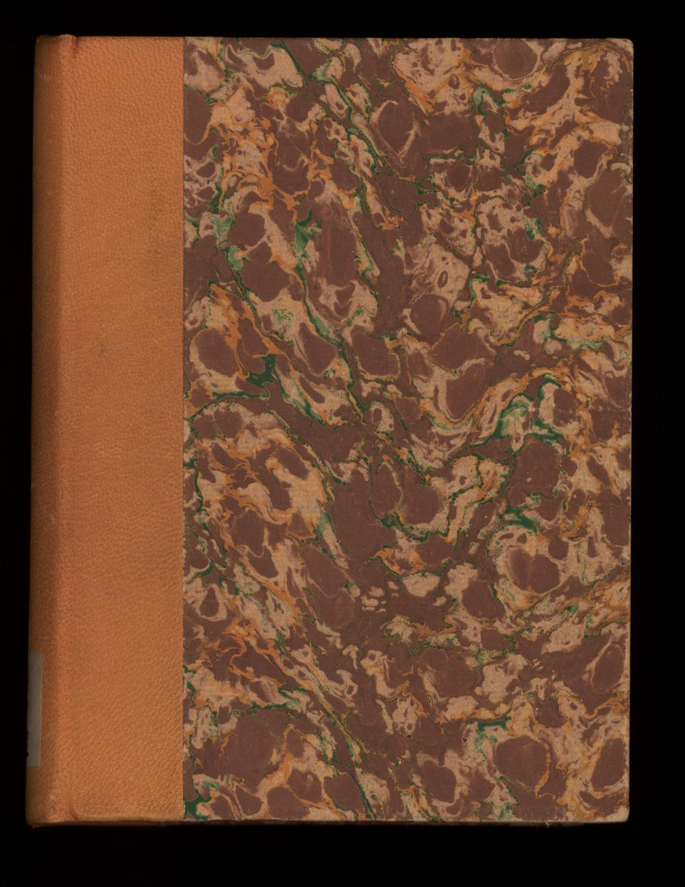
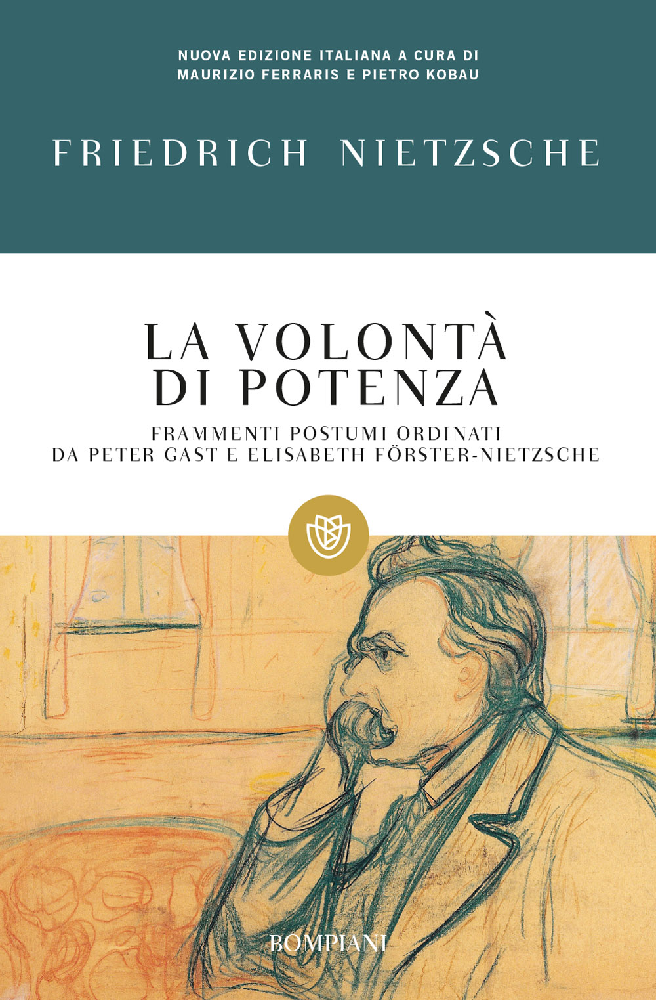
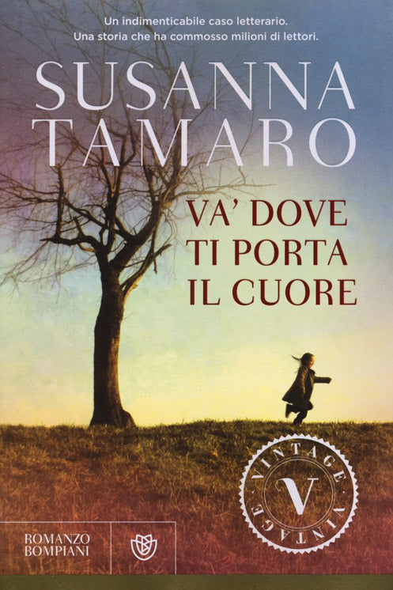
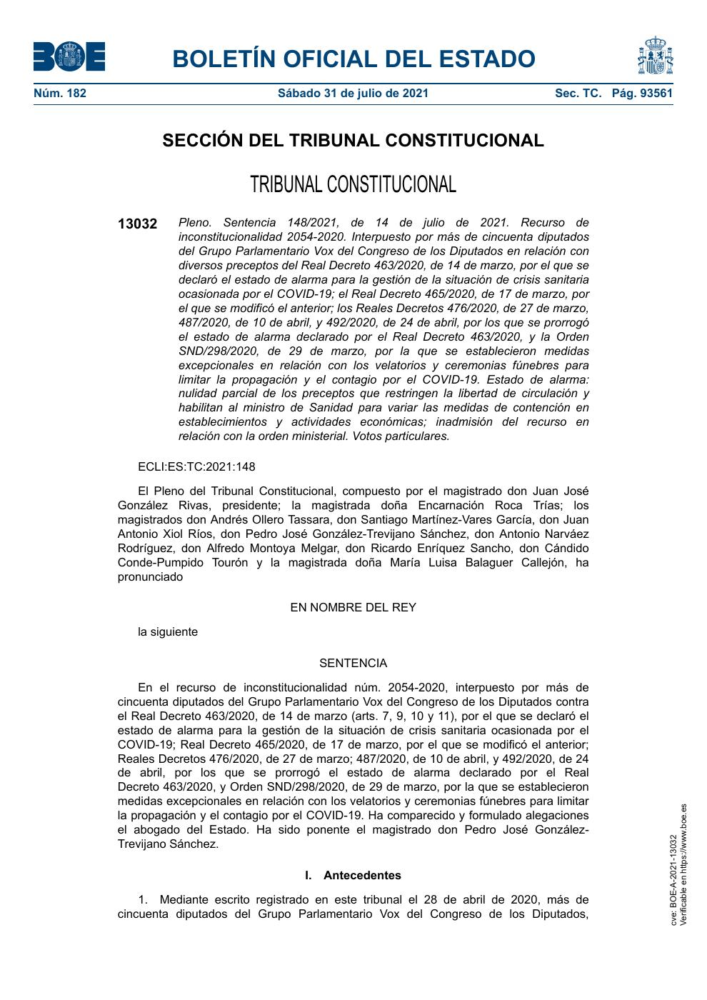
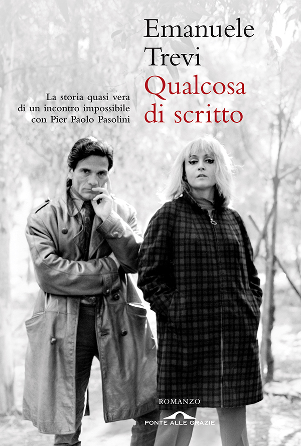
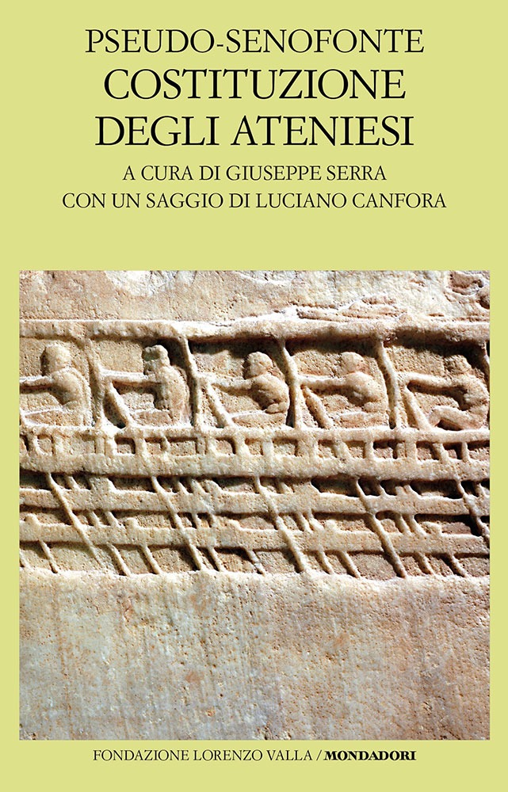
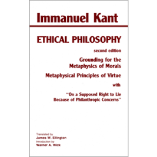
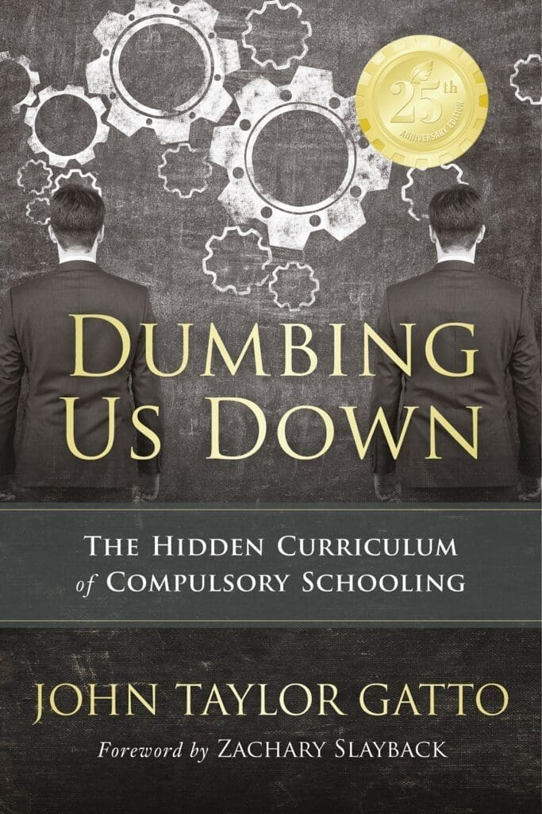
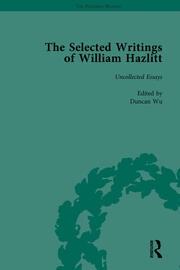

1:15:36 · 17 OPERE
Stultifera Navis: vivere in Narragonia.
Il filo del discorso
La nave dei folli di Sebastian Brant offre a Dr Divago una metafora per una lunga polemica sul linguaggio pubblico durante la pandemia. La destinazione Narragonia diventa l’immagine di una società che, secondo il relatore, avrebbe perduto strumenti di giudizio e memoria culturale. Il libro tedesco è del 1494, precedente alla Riforma protestante; Stultifera navis è il titolo dell’adattamento latino del 1497.
Leggi la sintesi completaRiduci la sintesi
La metafora della follia resta satirica e politica, senza trasformarsi in una diagnosi della popolazione. La parte iniziale analizza Non si Pass di Massimo Gramellini, pubblicato il 14 luglio 2021. Dr Divago contesta il paragone fra libertà personale e comportamenti che disturbano o danneggiano gli altri, giudicandolo una sostituzione dell’argomento. I richiami a Orwell e al metodo Kominsky gli servono per interrogare l’uso di parole condivise all’interno di un gruppo e la distanza fra persuasione e discussione razionale. Le accuse di manipolazione e la rappresentazione dei giornalisti come apparato unitario rimangono interpretazioni del commento. Il discorso passa poi alla pronuncia costituzionale spagnola del luglio 2021 e al rapporto fra libertà, legge ed emergenza. Il provvedimento discusso è identificabile con la STC 148/2021, che annullò alcune disposizioni del primo stato di allarme; non sancì che qualsiasi restrizione sanitaria sia illegittima. Anche le analogie con le leggi razziali richiedono una distinzione esplicita fra contesti e finalità. La condizione vaccinale personale di un giudice non prova, da sola, un difetto di imparzialità. Un secondo nucleo polemico riguarda un articolo di Emanuele Trevi del 16 luglio. Il relatore gli oppone Dante, Popper e soprattutto la risposta kantiana alla domanda sull’Illuminismo: pensare con la propria testa significa chiedere ragioni e poterle discutere. Il testo non autorizza tuttavia a respingere automaticamente ogni competenza specialistica. Un’ulteriore frase di Kant, riscontrata nel saggio del 1797 sul presunto diritto di mentire, orienta il ragionamento sul vincolo della politica al diritto. Il Vecchio Oligarca e Aristotele completano il confronto fra partecipazione pubblica e desiderio di conoscere. Nella conclusione, Dumbing Us Down di John Taylor Gatto collega scuola, abitudini di obbedienza e autonomia, mentre Hazlitt restituisce ai libri il valore di un dialogo interiore. Le affermazioni sanitarie della registrazione richiedono correzioni: il vaccino BCG non garantisce immunità assoluta, la mancata eliminazione di ogni contagio non annulla la natura vaccinale di un prodotto e le segnalazioni di farmacovigilanza non sono automaticamente danni causati accertati. Il giudizio complessivo del relatore sulla crisi come crisi culturale viene così conservato insieme alla distinzione fra proposta filosofica, opinione politica e prova empirica.
I libri nel discorso

Das Narrenschiff
Note sul riferimento
Copertina: Fotografia del piatto anteriore della legatura dell’esemplare Narrenschiff 1494, Universitätsbibliothek Basel, UBH Ai II 22, DOI 10.3931/e-rara-4620, Public Domain Mark. Legatura dell’esemplare conservato, non frontespizio illustrato originale né copertina editoriale moderna.
Immagine autentica identificata mediante la fonte indicata; non verificato visivamente l’esemplare o la pagina proiettata nella registrazione.
Riferimento ricavato dalla trascrizione automatica.

La volontà di potenza
Note sul riferimento
Copertina: Bompiani · 2001 · a cura di Maurizio Ferraris e Pietro Kobau
Copertina autentica della raccolta di frammenti postumi ordinati da Gast e Förster-Nietzsche, come dichiarato anche nell’immagine. Non indica un’opera conclusa da Nietzsche né l’edizione posseduta dal narratore.
Riferimento ricavato dalla trascrizione automatica.

Va’ dove ti porta il cuore
Note sul riferimento
Copertina: Copertina Bompiani, Vintage, 2013, 188 pagine, ISBN 9788845272707, dal catalogo ufficiale Giunti. Prima pubblicazione del romanzo nel 1994; distinta dalla ristampa Solferino 2023.
Copertina con autore, titolo e marchi Vintage e Bompiani. L’edizione di riferimento del 2013 non è attribuita al ricordo del relatore della prima uscita. I giudizi negativi sul romanzo restano suoi, senza certificare errori di pagine non citate o un plagio della sua recensione.
Riferimento ricavato dalla trascrizione automatica.

1984
Note sul riferimento
Copertina: Newton Compton · edizione illustrativa
Riferimento ricavato dalla trascrizione automatica.

Simposio
Note sul riferimento
Copertina: Adelphi · Piccola Biblioteca 81 · 1979
Copertina autentica dell’edizione di riferimento, controllata visivamente. Non identifica l’esemplare letto o citato nel video.
Riferimento ricavato dalla trascrizione automatica.
The Kominsky Method
Note sul riferimento
Copertina: Immagine promozionale ufficiale della serie sulla pagina Netflix, con Michael Douglas nel ruolo di Sandy Kominsky. Fotogramma promozionale, non manifesto con titolo e non copertina di un libro.
Immagine autentica identificata mediante la fonte indicata; non verificato visivamente l’esemplare o la pagina proiettata nella registrazione.
Riferimento ricavato dalla trascrizione automatica.

Sentencia 148/2021, de 14 de julio de 2021
Identificazione probabile
Note sul riferimento
Copertina: Prima pagina della pubblicazione ufficiale nel BOE n. 182, 31 luglio 2021, p. 93561, BOE-A-2021-13032. Pagina di sentenza, non frontespizio librario; resa dal PDF ufficiale.
Immagine autentica identificata mediante la fonte indicata; non verificato visivamente l’esemplare o la pagina proiettata nella registrazione.
Riferimento ricavato dalla trascrizione automatica.
Prima vennero… (First They Came…)
Identificazione probabile
Note sul riferimento
Fotografia del testo di Niemöller esposto all’USHMM: Dichiarazione del dopoguerra · fotografia della variante esposta all’USHMM
Fotografia autentica dell’allestimento nella mostra permanente USHMM, con il testo e visitatori. L’immagine documenta la variante museale che inizia con i socialisti; non viene presentata come manoscritto originale, copertina o variante esatta pronunciata nel video.
Riferimento ricavato dalla trascrizione automatica.

Divina Commedia
Note sul riferimento
Copertina: Giunti Barbera · Passepartout, 2021 · edizione di riferimento
Riferimento ricavato dalla trascrizione automatica.

La società aperta e i suoi nemici
Identificazione probabile
Note sul riferimento
Copertina: Armando Editore · Classici · 2018 · volume unico
Copertina autentica di riferimento, controllata visivamente. L’edizione non è identificata come quella usata nel video.
Riferimento ricavato dalla trascrizione automatica.

Qualcosa di scritto
Identificazione probabile
Note sul riferimento
Copertina: Copertina originale Ponte alle Grazie 2012 di Qualcosa di scritto, riprodotta dall’archivio ufficiale Premio Strega.
Immagine autentica identificata mediante la fonte indicata; non verificato visivamente l’esemplare o la pagina proiettata nella registrazione.
Riferimento ricavato dalla trascrizione automatica.

Risposta alla domanda: che cos’è l’Illuminismo?
Note sul riferimento
Copertina della raccolta che comprende il saggio sull’Illuminismo: Firenze University Press · Sette scritti politici liberi · 2011 · a cura di Maria Chiara Pievatolo
Copertina del volume cartaceo FUP che comprende il saggio, riscontrato dal catalogo universitario. L’ISBN appartiene alla raccolta; il filmato non annuncia un’edizione e il titolo del saggio è un’identificazione probabile della citazione.
Riferimento ricavato dalla trascrizione automatica.

Metafisica
Note sul riferimento
Copertina: Bompiani · Il pensiero occidentale · 2004 · a cura di Giovanni Reale
Copertina autentica di riferimento, controllata visivamente. L’edizione non è identificata come quella usata nel video.
Riferimento ricavato dalla trascrizione automatica.

Costituzione degli Ateniesi
Identificazione probabile
Note sul riferimento
Copertina: Fondazione Lorenzo Valla/Mondadori,5 settembre 2018,312 pagine, a cura di Giuseppe Serra, con un saggio di Luciano Canfora, ISBN 9788804688839. Copertina verde chiaro con rilievo di rematori. La datazione antica e la paternità restano discusse; non si rende certo un autore individuale.
Immagine autentica dell’opera, controllata visivamente; l’edizione di riferimento non è attribuita al filmato.
Riferimento ricavato dalla trascrizione automatica.

Über ein vermeintes Recht aus Menschenliebe zu lügen
Identificazione probabile
Note sul riferimento
Copertina: Copertina della raccolta Ethical Philosophy, seconda edizione, Hackett 1995, traduzione James W. Ellington. Il titolo del saggio è stampato sulla copertina; non un secondo record del contenitore. ISBN cartaceo 9780872203204.
Immagine autentica identificata mediante la fonte indicata; non verificato visivamente l’esemplare o la pagina proiettata nella registrazione.
Riferimento ricavato dalla trascrizione automatica.

Dumbing Us Down: The Hidden Curriculum of Compulsory Schooling
Note sul riferimento
Copertina: Copertina New Society Publishers, 25th Anniversary Edition, 19 maggio 2017, ISBN 9780865718548, prefazione Zachary Slayback. Edizione successiva al volume 1992.
Immagine autentica identificata mediante la fonte indicata; non verificato visivamente l’esemplare o la pagina proiettata nella registrazione.
Riferimento ricavato dalla trascrizione automatica.

The Sick Chamber
Identificazione probabile
Note sul riferimento
Copertina: Copertina del contenitore Selected Writings of William Hazlitt, volume 9, Uncollected Essays, a cura di Duncan Wu, raccolta originaria 1999, ristampa Routledge ISBN 9781138763289. Indice con The Sick-Chamber (1830); non copertina autonoma del saggio.
Immagine autentica identificata mediante la fonte indicata; non verificato visivamente l’esemplare o la pagina proiettata nella registrazione.
Riferimento ricavato dalla trascrizione automatica.
Fonti e approfondimenti (24)
- eric.ed.gov ↗
- hackettpublishing.com ↗
- hj.tribunalconstitucional.es ↗
- narragonien.informatik.uni-wuerzburg.de ↗
- newsociety.com ↗
- philocast.net ↗
- premiostrega.it ↗
- premiostrega.it ↗
- som.yale.edu ↗
- vaers.hhs.gov ↗
- weimar.bundesarchiv.de ↗
- boe.es ↗
- cambridge.org ↗
- cdc.gov ↗
- corriere.it ↗
- corriere.it ↗
- e-rara.ch ↗
- ema.europa.eu ↗
- fda.gov ↗
- gutenberg.org ↗
- nejm.org ↗
- routledge.com ↗
- senato.it ↗
- unibas.ch ↗